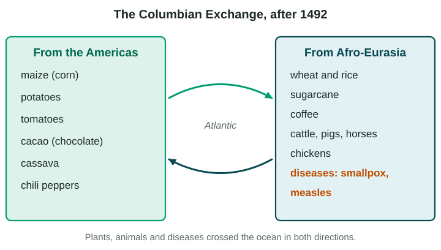
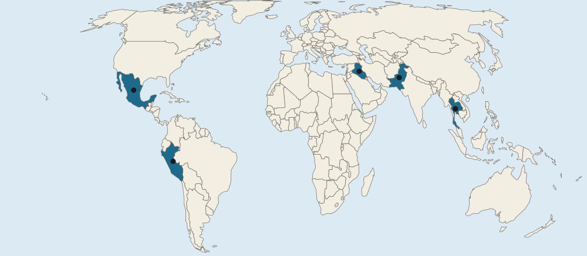

Agricultural Origins and Diffusions
Domestication turned wild species into crops and livestock in several hearths, including the Fertile Crescent, the Indus valley, Southeast Asia and Central America.
Part 1 · Hook
Why this matters
Part 2 · Before you start
What this builds on
Part 3 · Prerequisite check
Quick check before you start
1. Farming spreads outward from its hearth to neighboring areas while staying strong where it began. What type of diffusion is this?
- Expansion diffusion
- Relocation diffusion
- Stimulus diffusion
- Hierarchical diffusion
Show the answer
Expansion diffusion spreads outward from a hearth while remaining there; relocation diffusion moves with people to a new place.
- Correct: Expansion diffusion:
- Relocation diffusion:
- Stimulus diffusion:
- Hierarchical diffusion:
2. A family leaves its home because harvests have failed for years. For that family, the failed harvests are what?
- A push factor
- A pull factor
- An intervening obstacle
- A remittance
Show the answer
A push factor is a condition at the origin that drives people to leave.
- Correct: A push factor:
- A pull factor:
- An intervening obstacle:
- A remittance:
Part 4 · See it
See it first

Part 5 · Step by step
How it works, step by step
- People saved seeds and bred animals with useful traitswild species changed into crops and livestock
- Fields and herds needed care and harvests could be storedpeople settled in permanent villages
- Farming made a food surpluspopulations grew and some people took other jobs
- After 1492, ships linked the Americas and Afro-Eurasiathe Columbian Exchange spread crops, animals and diseases between them
Part 6 · Key ideas
Key ideas
- Domestication turned wild plants and animals into crops and livestock over many generations; the First Agricultural Revolution was the shift to farming that began about 12,000 to 10,000 years ago.
- Farming began on its own in several hearths: the Fertile Crescent (wheat, barley), the Indus River valley, Southeast Asia and Central America (maize), and others such as the Andes (potatoes).
- The Columbian Exchange after 1492 carried maize and potatoes to Afro-Eurasia and wheat, sugarcane, cattle and horses to the Americas. Diseases such as smallpox devastated Indigenous peoples.
Part 7 · Misconception
A common mistake
The wrong idea: The Columbian Exchange is trade with the country of Colombia.
What actually happens: It is named for Christopher Columbus. It was the exchange of plants, animals and diseases between the Americas and Afro-Eurasia after 1492.
Part 8 · Check yourself
Check yourself
Exam-style questions. Anything you miss goes into your review queue.
Map
Some early hearths of agriculture

- Hearth areas in the questions
1. Which letter marks the area of the Fertile Crescent, where wheat and barley were first domesticated?
- A
- B
- C
- E
Show the answer
The Fertile Crescent arcs through Southwest Asia, from the eastern Mediterranean through the Tigris and Euphrates valleys. On this map it is A.
- Correct: A: Right: A is in Southwest Asia, in the area of the Tigris and Euphrates rivers, part of the Fertile Crescent.
- B: B marks the Indus River valley in South Asia, another early hearth.
- C: C marks Central America, the hearth of maize, beans and squash.
- E: E marks the Andes of South America, where potatoes were domesticated.
2. Maize (corn) was first domesticated from a wild grass in one marked area. Which letter is it?
- A
- C
- D
- E
Show the answer
Central America (often called Mesoamerica) is the hearth of maize, beans and squash. It is C on this map.
- A: A is the Fertile Crescent, the hearth of wheat and barley.
- Correct: C: Right: maize was domesticated in what is now southern Mexico, in Central America.
- D: D is in Southeast Asia, a hearth of crops such as taro and rice.
- E: E is the Andes, the hearth of the potato.
3. Before 1492, crops from areas C and E were not grown in areas A and B. What best explains this pattern?
- The crops from C and E were domesticated after 1492
- Areas A and B had climates in which no American crop could grow
- Farmers in A and B did not trade with anyone before 1492
- An ocean separated the hearths until the Columbian Exchange
Show the answer
Distance and the oceans were the barrier. Once ships linked the hemispheres, the Columbian Exchange spread crops between hearths that had developed separately.
- The crops from C and E were domesticated after 1492: Maize and potatoes were domesticated thousands of years before 1492.
- Areas A and B had climates in which no American crop could grow: Maize and potatoes now grow widely in Southwest and South Asia, so climate was not the barrier.
- Farmers in A and B did not trade with anyone before 1492: People in Southwest and South Asia traded widely; their trade simply did not reach the Americas.
- Correct: An ocean separated the hearths until the Columbian Exchange: Right: the Atlantic and Pacific kept the Americas' crops apart from Afro-Eurasia until ships crossed after 1492.
4. Farming began separately in several of the marked areas, thousands of kilometers apart. What does this pattern show about the First Agricultural Revolution?
- Farming began in one place and spread to the others in a few years
- People in several hearths domesticated local plants on their own
- Farming began everywhere on Earth at the same moment
- Farming spread from the Americas to Asia before 1492
Show the answer
The map shows several hearths with different crops: wheat in A, maize in C, potatoes in E. Each was domesticated from local wild species, a sign of independent invention.
- Farming began in one place and spread to the others in a few years: Farming arose independently in several hearths, and spreading took thousands of years.
- Correct: People in several hearths domesticated local plants on their own: Right: there was no single origin; people in different regions domesticated their own local wild plants and animals.
- Farming began everywhere on Earth at the same moment: Farming began at different times in different hearths.
- Farming spread from the Americas to Asia before 1492: There was no regular contact between the Americas and Asia before 1492.
5. In the 1600s and 1700s, horses brought by Spanish settlers spread north into the Great Plains of North America. Nations such as the Comanche and Lakota began to hunt bison on horseback. This is an example of which process?
- The First Agricultural Revolution in the Americas
- Domestication of the bison by Plains nations
- Stimulus diffusion of a farming tool from Mexico
- The Columbian Exchange changing life in the Americas
Show the answer
The Columbian Exchange moved animals as well as plants. Horses from Europe spread across the Plains and changed hunting and travel.
- The First Agricultural Revolution in the Americas: That is the first domestication of local plants and animals thousands of years earlier.
- Domestication of the bison by Plains nations: Plains nations hunted wild bison; they did not domesticate them.
- Stimulus diffusion of a farming tool from Mexico: The horse itself was carried across the ocean, then spread across the land.
- Correct: The Columbian Exchange changing life in the Americas: Right: the horse came from Afro-Eurasia and transformed how Plains nations hunted and traveled.
6. Put these events in order, from earliest to most recent.
- Wheat and barley are domesticated in the Fertile Crescent
- Columbus crosses the Atlantic in 1492
- The potato is grown widely in Ireland
- Blight destroys Ireland's potato crop in the 1840s
Show the answer
Domestication came about 10,000 years ago; the Columbian Exchange began in 1492; the potato spread in Ireland over the next two centuries; the blight struck from 1845.
- Correct order: 1. Wheat and barley are domesticated in the Fertile Crescent 2. Columbus crosses the Atlantic in 1492 3. The potato is grown widely in Ireland 4. Blight destroys Ireland's potato crop in the 1840s
Part 9 · Summary
Summary
Part 10 · Up next
What comes next
Part 11 · Connections